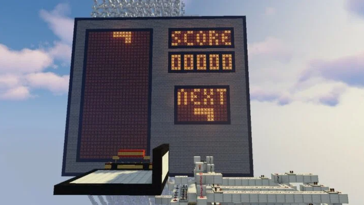
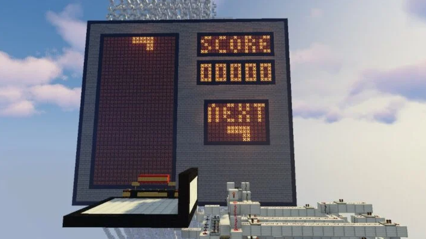

A játék végtelen lehetőségei
A Minecraft élvezhető egyedül, és többedmagával is. A világ ~60 millió méter hosszú, ami körülbelül a Föld ötszöröse.
A játék egy rendkívül nyugodt, kreatív élményt kínál. Hihetetlenül elterjedt nemzetközileg a kockákból álló online
single/multiplayer ahol nincsenek megkötések, és a kreativitást teljesen támogatja a játék közben. Vannak többen, akik évek
óta egyjátékos világban vannak, noha a hivatalos végét a játékban már rég elérték, különböző örült célokat
tűznek ki maguknak, amiket megvalósítanak akár egy nap, akár egy év alatt. Ilyen közülük Phillip Watson (Philza),
aki 5 évig játszott amíg nem halt meg a világjában.
Gyakori cél különböző tárgyak „kifarmolása” ami rengeteg tárgy kitermelése (ércek, élelem) ami egy nagyobb tárgyhoz,
„farmhoz” szükséges. Van, hogy ilyen „farmokat” húznak fel egy nagy „farm” érdekében, mindezt egyedül. Ezek általában több
ezer órát ölelnek fel, csak azért, hogy amint elkészült jöhessen a következő. A játék egy középkori (mediaval) stílushoz
tartja magát, a játékosbázis így egyedül felhúz teleportokat, bonyolult a játékban lévő redstone (gyakorlatilag áram)
szerkezeket, például:
 

Egy számológép épitve Minecraftban
A Tetris nevezetű játék épitve Minecraftban